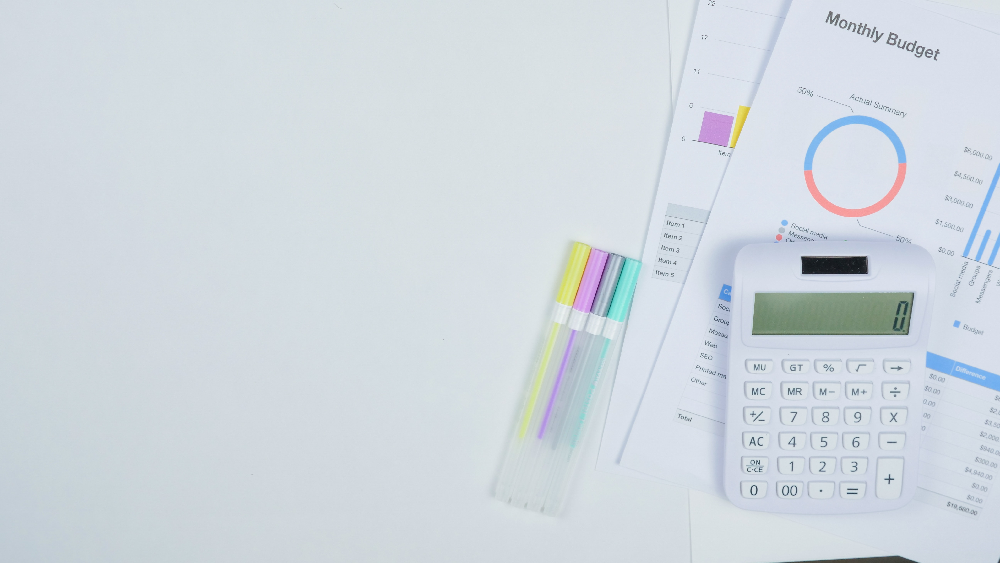

Tracking your income and expenses is the first essential step to getting in control of your finances. The second step is making a plan to manage them. These two combined will give you a successful budget.
If you are new to budgeting or just haven't been able to stick to a budget in the past, this step-by step plan will help you build a budget that suits your needs.
1. Track your income and expenses
This step is essential to understand where your money is going. You need to track any income sources and all expenses. The best place to start is with expenses. There are a number of apps which can do most of the work for you (Mint, Zeta and Trim). Looking back on your bank statements for card payments is another easy way to quickly find your spending patterns. You should then break all your expenses into three categories:
Saving goal:
Money put into savings or investments for retirement, house down payment or any other large expense you are saving for.Fixed expenses:
recurring costs which are paid regularly. Things like rent, mortgage, insurance or any debt payments.Variable expenses:
These are flexible costs which cover everything else. Food, personal care and entertainment.Once you have tracked all your income and expenses, you can check if you have money left over. Are you breaking even or spending over your means? Wherever you fall there is always room to save some money by bringing down your expenses.
2. Reduce unnecessary expenses
Once you have completed step one, you will have a clear idea of where your money is going. You can free up some extra cash by reducing some of your expenses.
I have a post on 5 ways to start saving today. The post has some easy ways in which you can cut back on expenses and start saving today. Some other advice on how to cut back expenses is to cancel any subscriptions that you aren't using. A lot of times credit card/ other debt can be reduced to a lower interest rate by talking to your bank/ credit card provider.

3. Set yourself a personal finance goal
People who set specific and realistic goals are much more likely to be successful. Your budget will help you plan for the goal. As the famous saying goes:
“If You Fail to Plan, You Are Planning to Fail” — Benjamin Franklin
What are your goals. It could be saving for retirement, a house, a holiday or building up an emergency fund. Reaching your individual goals can be achieved by following these behaviors: paying off debt, saving, and investing to achieve long term wealth. Having a specific goal in mind will help keep you focused and motivated.
4. Find a budget that works for you
Everybody is unique, so just as you will have your own style that you like, the same can be said for a budget. Choosing a budget that works for you and your financial situation is essential for you not to give up your budget after a month.
Another reason why it's important to choose a budget that suits you is so that you aren't too aggressive and cut out all of the comfort. While a budget is good for reducing expenditure, it is important not to cut everything out as you will end up burning out and blowing the budget completely.
Here are some of the commonly used budgets:
Zero-based budget
This is a very practical budget, but it seems a little bit more complicated than the rest. The main idea of a zero-based budget is to account for all of your income before it’s even spent.
An example of this is if you get paid 1500 a month, you basically account for all of that 1500 on paper as soon as you are paid. First you will pay off your fixed and saving expenses, then assign the rest to the variable expenses. This allows you to know where all of your money will be for the month and can help you decide if you can afford any of the larger purchases.
This budget works great, but the hard part can be sticking to the budget you have written down. If you do stick to it, the zero-based budget can help reduce uncertainty and help you stick you your day-to-day financial decisions.
50/20/30
This budget is easy to remember and good for beginners. For this system you split your income as follows:
- 50% Fixed expenses
- 20% Savings goals/debt repayments
- 30% variable expenses
The 50/20/30 budget can help you figure out if you are overspending in a certain area. An example is if you are spending 40% on variable expenses like eating out or entertainment. It can help you dial back until you are comfortably in the 30%.
Envelope or cash budget
For this system you need to take out cash from the bank. Then you use the cash for food shopping, eating out and any personal items you may need. This will not work for any of the electronic payments so you should leave money in your bank account to cover them. The principle here is that people are less willing to spend cash over using their card.
The flexible budget
This is probably the easiest going budget with little work needed. To achieve this budgeting style, you need to automate all of your fixed expenses and savings goals. It is best to try to get all of the payments out when you usually get paid. Then whatever is left over is yours to spend until your next pay day. This budgeting style is best for people who don't usually overspend.
The value based budget
This budget is aimed at prioritizing your personal happiness. The idea here is that if you aren't happy, you won't stick to the budget. For this to work, you again need to account for your fixed expenses and your savings goals. Then when you are making your budget make sure you add in what brings you joy. This could be a coffee in the morning or a trip on the weekend. Whatever makes you happy, prioritize it in your viable expenses and don't spend money on things that don't matter to you.
5. Check what is working
It's good to set aside some time to check in on your budget's health. Have you been overspending in certain categories? Did any expenses pop up which put your budget off course? If something isn't working where can you trim some costs? It is better to trim costs of fixed and variable expenses rather than take from your savings goals. You could try a different budgeting method if it's not working for you.
A budget should be adaptable to your financial life and it should change with you. If you are looking for more information on budgeting and a more in depth analysis, see this book for budgeting 101.